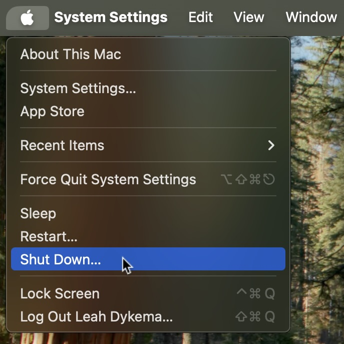
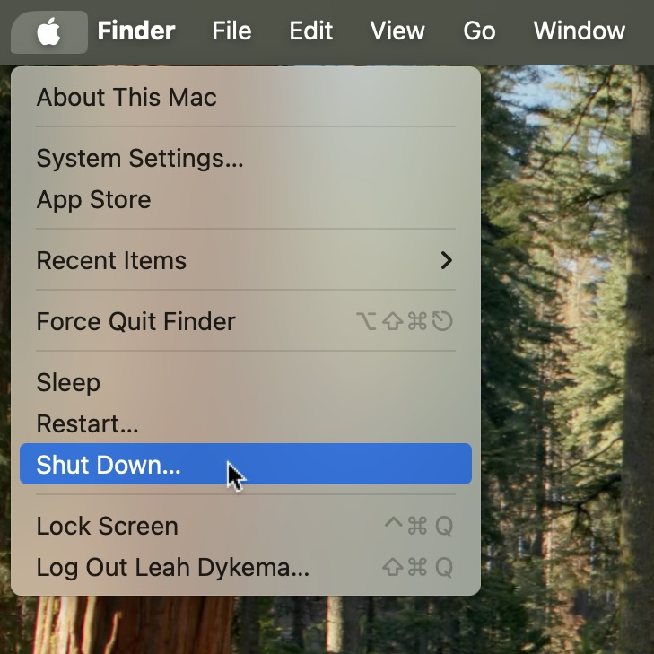
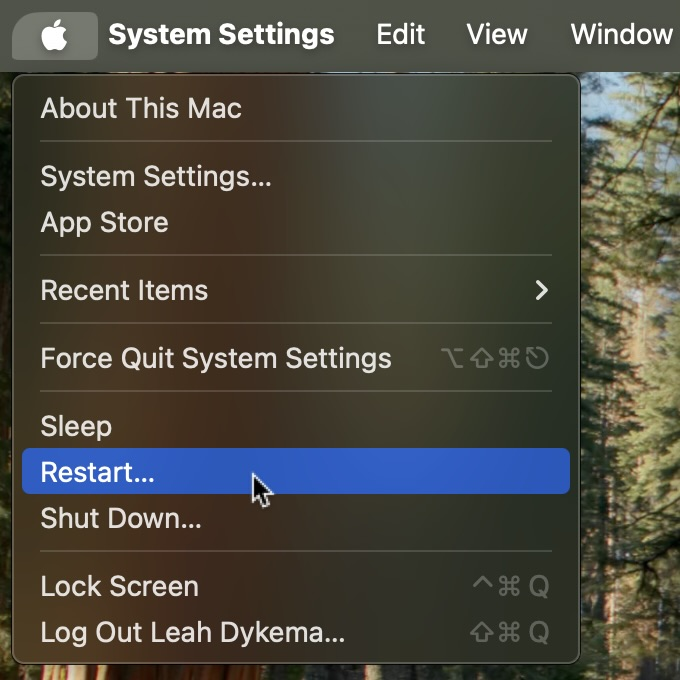
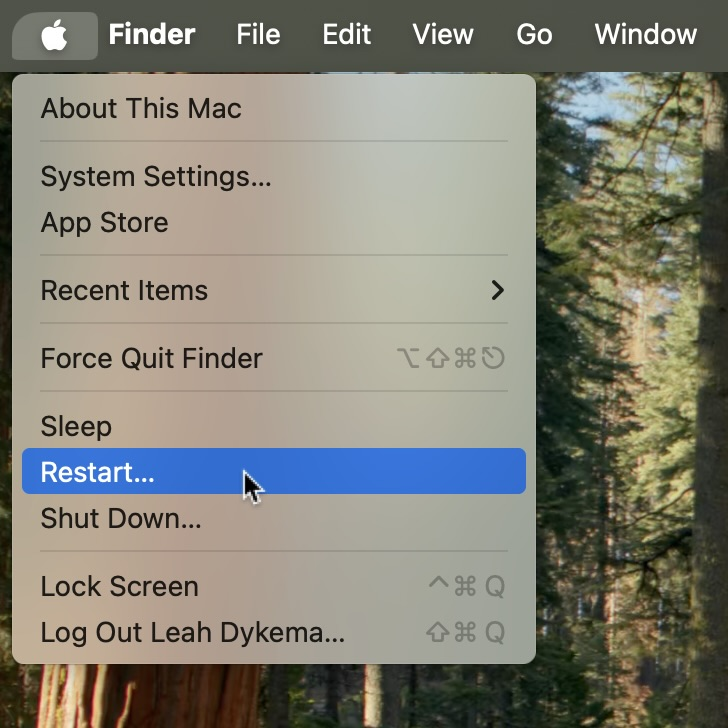

When something goes wrong with technology, the first step of troubleshooting is to restart or force restart a device. In this article, we will go over how to restart your Mac.
On your Mac, open the menu in the top left corner of your screen.
 On your Mac, open the menu in the top left corner of your Mac and click on restart.
 If your Mac is frozen or unresponsive, you can force restart your Mac.
Press and hold the following keyboard keys simultaneously to force restart your Mac without reopening currently open windows.
Press and hold Control + Cmmand + Power Button until the Mac bootup sound plays or the Apple logo appears.
Last updated: March 6, 2025
An Apple Account can be created on an iOS device with iOS 9 or later.
Reference the original support article by Apple here: Shutdown or Restart Your Mac - Apple Support
All references to Apple Inc. and their products and services are trade-marked and are used in these articles for educational purposes.